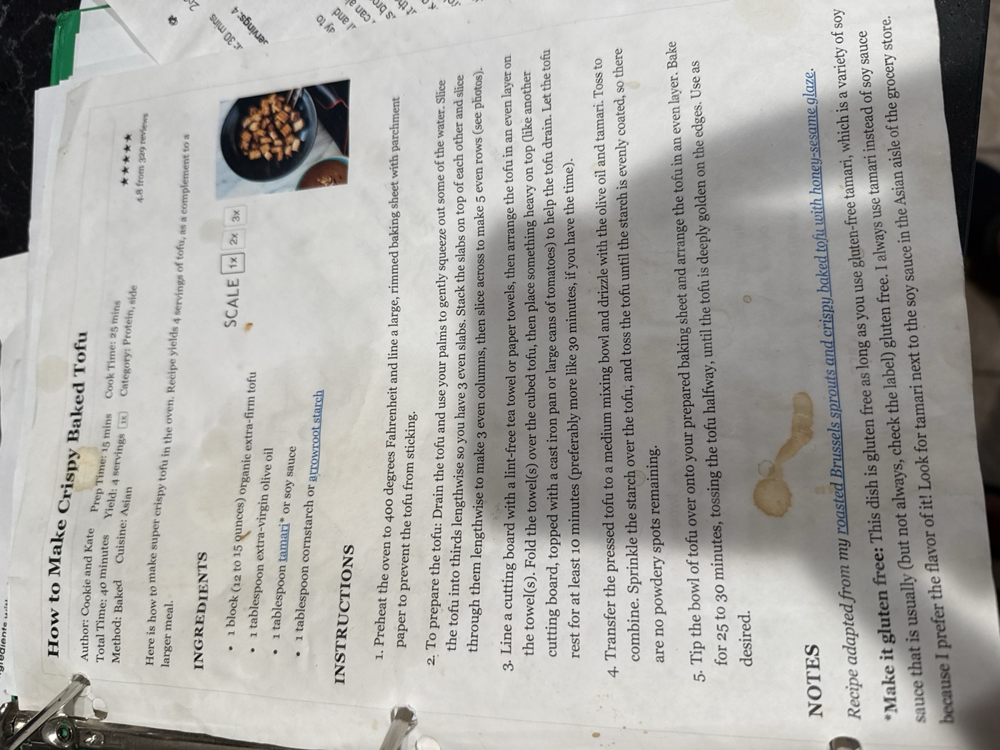

How to Make Crispy Baked Tofu

The secret to genuinely crispy oven-baked tofu: press out the water first, coat lightly in oil and tamari, then toss in cornstarch so there are no powdery spots left. Baked until deeply golden, it's a great protein-packed complement to a larger meal.
4servings
15 minprep time
25 mincook time
Vegandiet
Ingredients
- 1 block (12–15 oz) organic extra-firm tofu
- 1 tbsp extra-virgin olive oil
- 1 tbsp tamari (or soy sauce)
- 1 tbsp cornstarch or arrowroot starch
Method
- Preheat. Preheat the oven to 400°F and line a large, rimmed baking sheet with parchment paper to prevent the tofu from sticking.
- Cut the tofu. Drain the tofu and use your palms to gently squeeze out some of the water. Slice the tofu into thirds lengthwise so you have 3 even slabs. Stack the slabs on top of each other and slice through them lengthwise to make 3 even columns, then slice across to make 5 even rows.
- Press it. Line a cutting board with a lint-free tea towel or paper towels, then arrange the tofu in an even layer on the towel(s). Fold the towel(s) over the cubed tofu, then place something heavy on top (like another cutting board topped with a cast-iron pan or large cans) to help the tofu drain. Let it rest at least 10 minutes — preferably more like 30, if you have the time.
- Coat it. Transfer the pressed tofu to a medium mixing bowl and drizzle with the olive oil and tamari. Toss to combine. Sprinkle the starch over the tofu and toss until the starch is evenly coated, with no powdery spots remaining.
- Bake. Tip the bowl of tofu onto your prepared baking sheet and arrange in an even layer. Bake 25–30 minutes, tossing the tofu halfway, until deeply golden on the edges. Use as desired.
Make it gluten-free: this dish is gluten-free as long as you use gluten-free tamari, a variety of soy sauce that's usually (but not always) gluten-free — check the label. Look for tamari next to the soy sauce in the Asian aisle.
Recipe adapted from Cookie and Kate's roasted Brussels sprouts and crispy baked tofu.